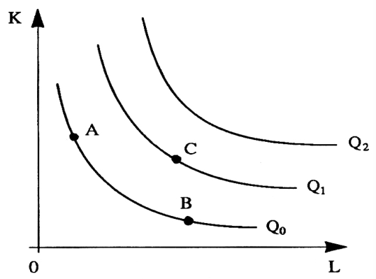
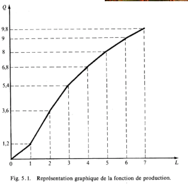
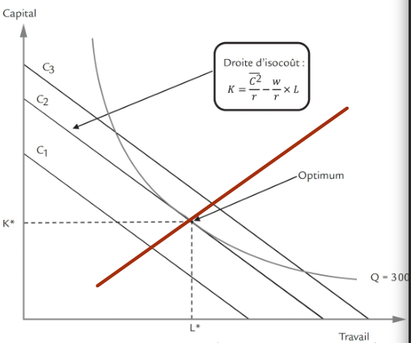
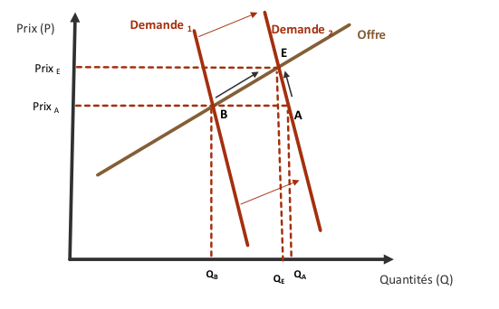
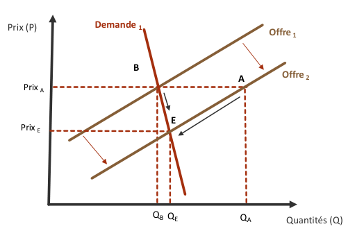

Consommateur et demande
Ménage : Concept de macroéconomie (agrégat de la comptabilité nationale)
- fonction principale: Consommation Consommateur : Concept microéconomique
- fonction principale: Consommation
Données statistiques
- En 2020, 72% des personnes en emploi se déplacent en deux roues pour se rendre sur leur lieu de travail.
- En 2020, 15% des personnes en emploi utilisent les transports en commun.
- En 2020, les transports en commun sont davantage utilisés dans les aires urbaines (42% des transports à Paris)
Le rapport au transport est aussi liée à une logique sociologique de classe, ainsi, les classes populaires ont plus tendance à utiliser une voiture individuelle, pas uniquement à cause des contraintes objectives mais aussi à cause d’une socialisation culturelle.
Un Employé est quelqu’un qui travaille dans une bureau mais qui à un diplôme inférieur à BAC + 2.
Utilités ordinale et cardinale
L’utilité cardinale inventée par Alfred Marshall attribue un nombre comme valeur d’utilité à chaque bien.
Néanmoins, cette conception à plusieurs limites :
- l’hypothèse de la constance de l’utilité marginale de la monnaie
- Le problème de l’interdépendance des utilités (l’utilité d’un bien n’est pas indépendante de la détention d’autres biens)
Face à la difficulté de quantifier précisément la valeur qu’un consommateur associe à la consommation d’un bien (utilité cardinale), Pareto invente l’utilité ordinale, qui quantifie les rapports d’utilités en ordre de préférence.
La théorie de l’utilité ordinale constitue un progrès scientifique :
- Il s’agit d’une hypothèse plus simple qui explique autant de phénomènes que la précédente
- La question de la mesure de l’utilité totale est évacuée
- Le modèle accorde davantage d’importance aux contraintes observables qu’a l’utilité.
Courbes d’indifférence
Les courbes d’indifférence permettent d’établir des arrangements qui vont satisfaire un consommateur pareillement :
- L’utilité (U) est inchangée quand on se déplace le long s’une courbe d’indifférence. U augment quand on passe à une courbe plus élevée vers la droite.
Le principe d’utilité marginale décroissante fait des courbes d’indifférence convexes.
On note une fonction d’utilité avec et représentant la préférence du consommateur pour le bien ou .
Contraintes et incitations
On représente la contrainte budgétaire par une droite : Cette contrainte force le consommateur à choisir dans un ensemble restreint de combinaisons des biens et .
Le coefficient directeur de cette droite représente le rapport des prix.
Par hypothèse, le revenu de l’individu dépend pour l’essentiel du prix de son travail (le taux salaire) qui est fixé sur le marché du travail.
L’intérêt de l’analyse de Pareto c’est de joindre le souhaitable et le contraint pour le consommateur.
On trouve l’optimum du consommateur à l’intersection entre la courbe d’indifférence la plus à droite et la droite du budget.
Détermination de l’optimum
Afin de determiner l’optimum pour le consommateur on remplace dans la fonction d’utilité par son expression en fonction de la contrainte :
Variation du revenu
La variation du revenu du consommateur entraîne un déplacement de la droite du budget vers la droite (augmentation de ).
La courbe de consommation revenu lie les différents optimums en fonction du revenu. Elle traduit l’ensemble des choix optimaux réalisés par le consommateur peut les différents niveaux de revenus lorsque les prix relatifs des biens restent constants.
La fonction d’Engel associe a toute variation du revenu du consommateur (R), la quantité optimale de bien X (Xm) que le consommateur, à l’équilibre, établit. Elle modélise la progression de la demande par rapport au revenu.
La fonction d’Engel se détermine pour tout comme
Élasticité de la demande
Élasticité revenu
L’élasticité-revenu mesure le degré de sensibilité de la demande d’un bien par rapport aux variations du revenu. Elle est égale au rapport entre la variation relative des quantités demandées () et la variation relative du revenu ().
On la note
L’élasticité-revenu mesure le degré de sensibilité de la demande d’un bien par rapport aux variations du revenu. Elle est égale au rapport entre la variation relative des quantités demandées () et la variation relative du revenu ().
Élasticité prix
L’élasticité-prix de la demande mesure de degré de sensibilité de la demande d’un bien par rapport aux variation du prix de ce bien. Elle est égale au rapport entre la variation relative des quantités demandés () et la variation relative du prix ().
On la note Typiquement, sur le plan empirique, l’élasticité prix est négative. Il s’agit donc d’un bien typique.
Néanmoins, il existes certains biens, dits atypiques pour lesquels l’élasticité-prix est positive. Il en existe deux types :
- Les biens Veblen
- Les biens Giffen
De plus, dans certains cas, l’élasticité prix est négative mais tends vers 0. On parle donc d’effet King, qui concerne essentiellement les biens premiers, essentiels et peu substituables.
Élasticité croisée
L’élasticité croisée () de la demande du bien X par rapport au prix d’un bien Y est égale au rapport entre le pourcentage de variation de la quantité du bien X et le pourcentage de variation du prix du bien Y.
Fonction de demande
La courbe de demande individuelle montre comment évolue la consommation d’un bien pour un individu lorsque le prix de ce bien varie.
Le surplus du consommateur mesure le montant des gains qu’un consommateur retire de ses achats en faisant la différence entre le prix effectivement payé par le consommateur et le prix qu’il aurait été prêt à payer.
La demande agrégée se déduit des demandes individuelle.
Le consommateur est il vraiment rationnel ?
La recherche en économie se divise en deux branches :
- L’économie expérimentale, qui approche la question économique d’un point de vue scientifique et statistique, qui se base sur des données expérimentale
- L’économie comportementale
Opposition de l’hypothèse de rationalité
On observe des biais cognitif qui empêchent la rationalité.
Production et Consommation
Fonctions de production
Une combinaison productive consiste à combiner des facteurs de production (capital et travail) dans des proportions données pour réaliser un certain volume de production.
Une fonction de production indique le niveau de production () en fonction d’une combinaison productive pour un niveau de technologie donné. Il s’agit d’une fonction continue et monotone qui admet des dérivée partielle du premier et du second ordre.
Une fonction de production est caractérisé par des inputs et des outputs.
C’est une fonction croissante, l’augmentation des inputs mène toujours à celle des outputs.
Inputs
Les inputs sont tous les biens et services qui sont utilisés et combinés pour produire des outputs :
- Biens et services intermédiaires
- Facteurs de production
On fait la différence entre les inputs variables et ceux fixes.
Outputs
Les outputs sont le résultat de la production pour le producteur, c’est à dire les biens et services qu’il produit.
Ensemble de production
Un procédé de production qui transforme des inputs et variables et plusieurs inputs fixes, en un output peut être modélisé par une fonction de la forme , qui admet les inputs fixes comme paramètres.
Un producteur peut donc mettre en oeuvre plusieurs combinaisons de et pour produire une quantité déterminée d’output . La liste de toutes les combinaisons de production techniquement réalisables pour chaque niveau d’output de à s’appelle ensemble de production.
L’identification de cet ensemble de production est un problème technique.
La sélection d’une combinaison spécifique d’input et d’output est un problème économique.
Représentation
On peut représenter dans le plan la fonction de production pour un niveau spécifique d’output en fonction de deux inputs.
En général, on va tracer :
- étant le travail (labour)
- le capital (Kapital ?)
Ainsi, on obtient généralement des courbes convexes similaires aux courbes d’indifférence, qui reflètent la nécessité d’un équilibre entre la quantité de travail et de capital.

Production sur une courte période
Sur une période de production courte, on peut faire l’hypothèse que le facteur capital () est fixe : .
Ainsi, on peut donc représenter en fonction de pour un donné.

Le produit total (PT) désigne la quantité totale d’output produit pour chaque niveau d’output.
Le produit moyen (PM) représente la quantité produite par unité de facteur employé. On peut distinguer le PML () du PMK ().
Productivité marginale
Le produit marginal (Pm) ou productivité marginale représente la variation de la quantité produite par variation de la quantité de facteur ( ou ). On distingue donc le PmL et le PmK. On considère aussi sur la courte période que puisque est fixe,
Si le facteur de production est imparfaitement divisible on en fait une dérivée discrète qu’on note : Si le facteur de production n’est pas divisible on a:
Si la productivité marginale est supérieure à la productivité moyenne alors ajouter une unité d’un facteur de production entraîne une hausse de la productivité moyenne de ce facteur.
Rendements
La loi des rendements décroissant explique que pour un état de technologie donné, avec tout les facteurs de production fixes sauf un croissant, la productivité marginale de celui-ci doit baisser à un moment ou à un autre.
Ainsi, il est possible de déterminer un optimum, logiquement située là ou la productivité marginale rencontre la productivité moyenne.
Production de longue période
Sur une longue période, le facteur capital n’est pas forcément fixe. On va donc avoir besoin de modéliser l’évolution de la production en fonction de et de .
On peut donc tracer une courbe d’isoquant ou isoproduit, qui rassemble toutes les combinaisons de facteurs de production qui permettent de produire un niveau d’output constant.
On peut aussi tracer sur le même graphe une droite d’isocoût qui représente toutes les combinaisons de facteurs de production qui génèrent le même coût total pour le producteur.
On obtient ainsi un graphe similaire aux Courbes d’indifférence, mais qui modélise la production.
Ces courbes peuvent beaucoup varier en fonction tu type de facteurs :
- Les facteurs complémentaires ne sont pas substituables
- Certains facteurs sont parfaitement substituables.
Le taux marginal de substitution technique () représente de coût de renonciation d’une unité de capital en fonction du nombre d’unités de travail afin de conserver le même niveau de production.
A l’optimum, le est égal au prix des facteurs de production.
Le sentier d’expansion de la firme correspond a l’ensemble des choix optimaux de production de la firme pour une technologie donnée et pour un prix relatif constant des facteurs de production. Il s’agit dune droite qui passe par tout les optimums.

Rendements d’échelle
Sur la longue période, une entreprise peut tenter d’améliorer ses rendements en augmentant son volume de production.
- Si elle augmente l’ensemble de ses facteurs de production dans les mêmes proportions on dit qu’elle change d’échelle (rendements d’échelle)
- Si elle modifie son modèle technologique et qu’elle change la proportion de ses facteurs on parle de rendements de substitution.
On dit qu’il y à rendements d’échelle quand une entreprise augmente le volume de sa production en maintenant son coefficient d’intensité capitalistique () constant. Les rendements d’échelle peuvent être constants, décroissants ou croissants.
Ces rendements d’échelle traduisent le degré d’homogénéité de la fonction de production.
- Si les rendements sont croissants
- Si les rendements sont décroissants
- Si les rendements sont décroissants
Fonction de Cobb-Douglas
La fonction de Cobb-Douglas permet de modéliser la production en maintenant l’hypothèse des rendements décroissants et des rendements d’échelles.
Ainsi on à : et
De plus, avec l’hypothèse des productivités marginales décroissants on a convexe et les dérivées secondes négatives :
\frac{\partial Q_2}{\partial L_2} < 0 \\ \frac{\partial Q_2}{\partial K_2} < 0 \end{cases} \implies \begin{cases} \alpha < 1 \\ \beta < 1 \end{cases}Aussi,
Élasticité de substitution
L’élasticité de substitution est constante et égale à l’unité. Ainsi une baisse de du facteur travail doit être compensable par une hausse de du facteur capital.
Fonction de coût
La fonction de coût associe le plus faible coût total de production au prix des inputs et au niveau de loutput décidé par la firme.
La fonction de coût indique ce que coûte l’activité de production si la firme choisi rationnellement la combinaison technologique optimale.
représente le capital (achat + amortissement + remboursements)
représente de travail, les consommations intermédiaires, etc. On peut le diviser en deux catégories :
- Les coûts variables proportionnels () qui sont des multiples de l’output ()
- Les coûts variables non-proportionnels () qui varient plus que linéairement par rapport à l’output.
Les fonctions de coût
La fonction de coût moyen indique le coût en moyenne par unité d’output :
La fonction de coût marginal indique la variation du coût en fonction de la variation de l’output. C’est la dérivée du coût en fonction de l’output :
La fonction de coût total de long terme indique le coût minimal de production correspondant à chaque niveau d’output lorsqu’il est possible de modifier la quantité de tous les facteurs de production. Cette fonction passe par tous les minimums des courbes de coût moyen de court terme.
Cette courbe admet un minimum, est est divisé en trois parties :
- La phase de rendements croissants ou la dérivée du coût est négative
- La phase de rendements constants ou la dérivée est nulle
- La phase de rendements décroissants ou la dérivée est positive.
La point de passage de la phase à la phase s’appelle l’échelle minimum efficace ().
Cette forme décroissant au début est expliquée par plusieurs facteurs comme une division du travail plus productive à une certaine échelle et la présence de coûts fixes irrécupérables.
L’augmentation des coûts à un certain seuil est liée à l’épuisement des facteurs économie d’échelle et à l’apparition de nouveau coûts fixes de gestion.
Ce problème est soulevé par l’idée de la taille critique de la firme.
Offre et prix
Le producteur veut maximiser son profit. Le profit est positif tant qu’une unit de produit vendue est supérieure à son coût.
Le profit total () est égal à la différence entre les recettes et les coûts de production. La recette totale () vaut le produit des quantités vendues par le prix unitaire :
Le profit total est donc égal à la recette totale moins le coût total :
La recette moyenne est par définition égale au prix unitaire.
La recette marginale représente la variation de la recette totale pour une unité supplémentaire de bien produite. Elle vaut la dérivée de par rapport à :
La recette marginale est égale à la recette moyenne et au prix.
La fonction d’offre individuelle correspond au coût marginal du producteur.
Élasticité
L’élasticité prix de l’offre mesure la sensibilité de l’offre d’un produit par rapport à une variation de son prix.
Le surplus du producteur mesure le montant des gains nets qu’un producteur retire de ses ventes :
Les marchés concurrentiels
Le capitalisme est un système économique fondé sur l’accumulation du capital, sur la propriété privée des facteurs de production et sur la coordination par le marché.
Une économie de marché est un mode de coordination décentralisé pour l’allocation et la distribution des richesses dont l’information principale repose sur l’incitation par le signal prix et ou les transferts de droits de propriété s’effectuent par une confrontation d’offres et de demandes sur un ensemble de marchés.
On distingue trois étages de l’activité économique :
- Les masses immobiles qui se situent en dehors du marché
- L’économie d’échange, marchande et peu institutionnalisée
- L’économie monde avec un capitalism abstrait globalisé.
Modèle de la concurrence pure et parfaite
La concurrence désigne une situation de marché dans laquelle il existe une compétition entre vendeurs et acheteurs.
Le modèle de la concurrence pure et parfaite est le modèle de référence standard dans l’analyse microéconomique. Il repose sur plusieurs hypothèses, dont notamment :
- L’atomicité du marché : aucun consommateur ni aucun producteur n’a une influence suffisante pour affecter le prix du marché.
- L’homogénéité des produits : tous les produits sont identiques d’un point de vue de leurs caractéristiques, de leur qualité et de leur utilisation, ce qui conduit à une substituabilité parfaite.
- La transparence de l’information : tous les consommateurs et producteurs disposent de toutes les informations nécessaires sur les produits, leurs prix et qualités sans coûts de recherche, ce qui garantit que les choix sont faits en toute connaissance de cause.
- Mobilité des facteurs de production : le travail et le capital peuvent se déplacer librement d’un secteur à un autre, sans coûts ni délais.
Concurrence imparfaite
En réalité, le modèle de concurrence pure et parfaite ne s’applique jamais intégralement dans la pratique, car les conditions nécessaires sont difficilement réalisables dans le monde réel. Les marchés sont souvent caractérisés par une certaine forme de concurrence imparfaite.
Ainsi, en 1966, Kevin Lancaster développe la nouvelle théorie du consommateur qui analyse le choix du consommateur non plus en termes de produits mais en termes de caractéristiques de ces produits. Selon Lancaster, les consommateurs maximisent leur satisfaction en choisissant une combinaison de caractéristiques, ce qui permet de prendre en compte la différenciation des produits.
Obstacles
En réalité, les conditions de la concurrence pure et parfaite peuvent être bloqués par un certain nombre de facteurs matériels ou liés à des régulations.
Équilibres de marchés concurrentiels
Sur un marché concurrentiel, un bien à un prix unique, car toute variation est compensée par un mécanisme d’arbitrage de compensation.
Le surplus total est la somme des surplus des consommateurs et des producteurs.
Le mécanisme d’ajustement par le prix est lié a la fixité des quantités et à la variabilité des prix. Si on suppose un marché à prix fixe, l’ajustement d’opère par quantité. On parle alors de situation de rationnement.
L’élasticité-prix représente le degré de sensibilité de l’offre d’un bien par rapport aux variation du prix de ce bien. Elle est égale au rapport entre la variation relative des quantités demandées et la variation relative du prix. Elle est généralement positive.
Choc de demande positif

Choc d’offre positive

Réguler des marchés concurrentiels
Quand les marchés s’éloignent du modèle de concurrence pure et parfaite, il faut les réguler.
Subvention
On peut les réguler par subvention c’est à dire par le versement d’un revenu de transfert par l’État à destination de certains ménages sous conditions de ressources ou de statuts.
- APL
- ALF
- ALS
Taxes
La régulation des marchés peut passer la la taxation par l’état de certains agents ou des certaines opérations économiques.
Régulation par des quantités
Le marché peut aussi avoir des régulation sur la quantité, ce qui crée une situation de rationnement artificiel.
Un exemple de ce type de régulation est le prix plafond.